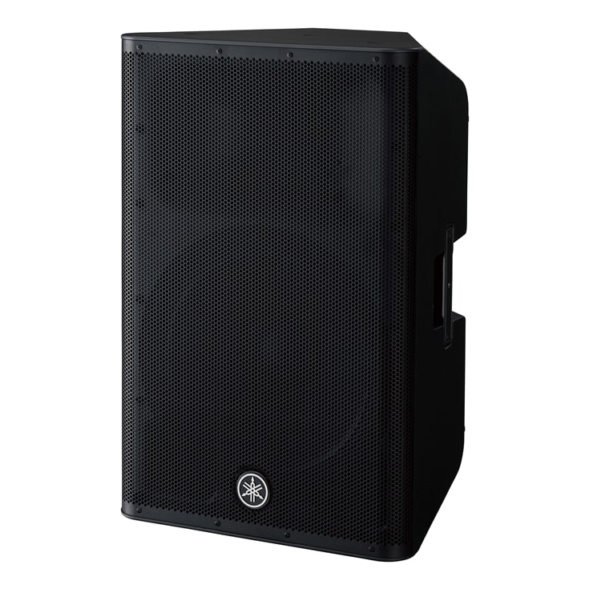

Parlantes
DXR15
El DXR15mKII consigue unas prestaciones impresionantes con un nivel de presión sonora máximo de 134 dB y ancho de banda completo gracias a la combinación de un potente amplificador de clase D con una unidad de graves de alta potencia y con las tecnologías de vanguardia de Yamaha. Y si a esto le añadimos el procesamiento D-CONTOUR, tendremos la sensación de estar utilizando un subgrave.
